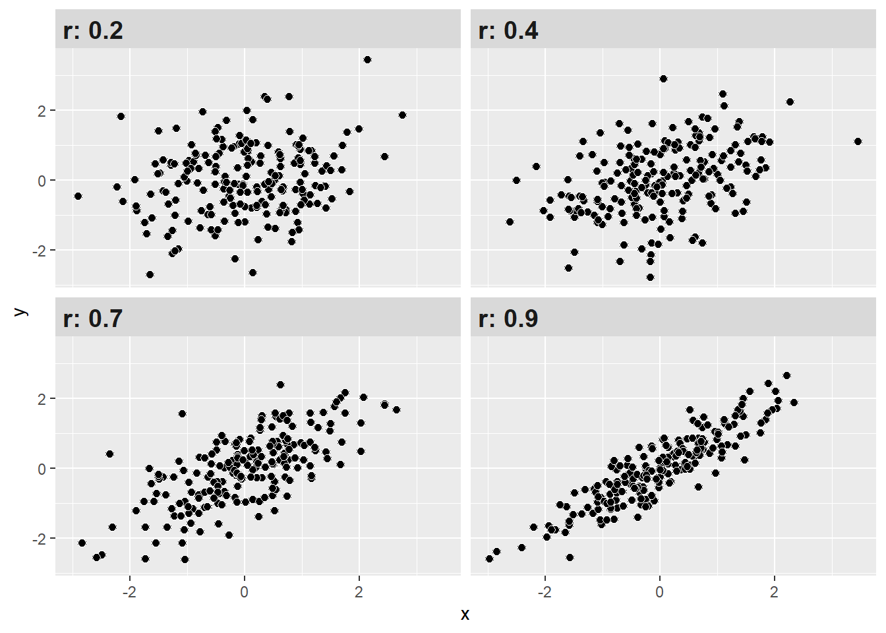

Código
pacman::p_load(dplyr, car, sjmisc, sjPlot, sjlabelled, stargazer, kableExtra, corrplot, texreg, ggplot2, ggpubr)El desarrollo de esta guía tiene por objetivo revisar algunos procedimientos para la estimación de regresiones lineales y múltiples en R.
Por temas de orden y reproducibilidad, en este curso hemos separado en dos momentos el trabajo con datos, y dos archivos de código correspondientes.
Cohesión barrial con elsoc 2016. Código de preparación disponible en: https://r-data-analisis.netlify.app/practicos/resumen-content#preparaci%C3%B3n
pacman::p_load(dplyr, car, sjmisc, sjPlot, sjlabelled, stargazer, kableExtra, corrplot, texreg, ggplot2, ggpubr)o desde internet:
load(url("https://github.com/Kevin-carrasco/R-data-analisis/raw/main/practicos/files/elsoc2016_proc.RData"))sjmisc::descr(proc_data,
show = c("label","range", "mean", "sd", "NA.prc", "n"))%>% # Selecciona estadísticos
kable(.,"markdown") # Esto es para que se vea bien en quarto| var | label | n | NA.prc | mean | sd | range | |
|---|---|---|---|---|---|---|---|
| 2 | ideal | Este barrio es ideal para mi | 2926 | 0.0341647 | 2.615174 | 1.0202541 | 4 (0-4) |
| 4 | integracion | Me siento integrado en este barrio | 2923 | 0.1366587 | 2.565515 | 0.9993502 | 4 (0-4) |
| 3 | identificacion | Me identifico con la gente de este barrio | 2923 | 0.1366587 | 2.523777 | 0.9884856 | 4 (0-4) |
| 8 | pertenencia | Me siento parte de este barrio | 2925 | 0.0683293 | 2.627692 | 0.9878809 | 4 (0-4) |
| 5 | m01 | Nivel educacional | 2925 | 0.0683293 | 5.260513 | 2.2015019 | 9 (1-10) |
| 7 | m0_sexo | Sexo del entrevistado | 2927 | 0.0000000 | 1.602665 | 0.4894300 | 1 (1-2) |
| 6 | m0_edad | Edad del entrevistado | 2927 | 0.0000000 | 46.090878 | 15.2867983 | 70 (18-88) |
| 1 | cohesion_barrial | cohesion_barrial | 2917 | 0.3416467 | 10.333562 | 3.3978552 | 16 (0-16) |
En la Tabla 1 podemos observar los descriptivos generales de la base de datos procesada que utilizamos en el práctico anterior. Contiene ya creado el índice de cohesión barrial cuya media es de 10,33
Seleccionamos las principales variables y cambiamos su nombre. No seleccionaremos las variables originales que construyeron el índice.
proc_data <- proc_data %>% select(cohesion_barrial, edad=m0_edad, educacion=m01, sexo=m0_sexo)¿Qué era la correlación?
La correlación es una medida de asociación entre variables, que describe el sentido (dirección) y fuerza de la asociación.
En otras palabras, nos permite conocer cómo y cuánto se relaciona la variación de una variable, con la variación de otra variable.
Podemos ver la asociación de todas las variables, como lo muestra la ?@cor-complete
M <- cor(proc_data, use = "complete.obs") # Usar solo casos con observaciones completas
M cohesion_barrial edad educacion sexo
cohesion_barrial 1.00000000 0.18654894 -0.03008061 -0.03791262
edad 0.18654894 1.00000000 -0.34718265 0.06180434
educacion -0.03008061 -0.34718265 1.00000000 -0.08564583
sexo -0.03791262 0.06180434 -0.08564583 1.00000000Este es el reporte simple, pero no muy amigable a la vista.
diag(M) = NA # Elimina la diagonal (correlaciones absolutas de cada variable consigmo misma)
rownames(M) <- c("A. Cohesión barrial",
"B. Edad",
"C. Educación",
"D. Sexo")
colnames(M) <-c("(A)", "(B)","(C)", "(D)")corrplot::corrplot(M,
method = "color", # Cambia los círculos por color completo de cada cuadrante
addCoef.col = "#000390", # Color de los coeficientes
type = "upper", # Deja solo las correlaciones de arriba
tl.col = "black", # COlor letras, rojo por defecto
na.label = "-")
Con esta mejor visualización, algunas observaciones sobre la matriz de correlaciones:
Finalmente, también se puede representar la correlación entre dos variables en un gráfico de nube de puntos o scatterplot.
sjPlot::plot_scatter(proc_data, cohesion_barrial, edad)Donde:

¿Y cómo puedo saber si el valor de la correlación es alto, medio o bajo? Si bien la correlación no nos indica causalidad, si nos permite conocer la dirección y fuerza de asociación entre dos variables. Un estándar para determinar qué tan fuerte es dicha asociación en las ciencias sociales es el propuesto por Cohen (1998).
| r | Significado aproximado (Cohen 1988) |
|---|---|
| < ±0.1 | Muy pequeño |
| ±0.1–0.3 | Pequeño |
| ±0.3–0.5 | Moderado |
| >±0.5 | Grande |
Con estos criterios podemos interpretar de mejor manera nuestros resultados de correlación. Como se observa, mientras más alto (sea en + o -) el coeficiente, más juntos estarán los datos (puntos), mostrando un patrón.

Interpretación
Recordemos nuestra matriz del comienzo:
Tenemos que la correlación entre la variable de ingresos y nivel educacional es 0,42. ¿Cómo interpreto esto?
Una manera recomendable es la siguiente:
El coeficiente de correlación de Pearson entre ingresos y nivel educacional es positivo y moderado (r = 0.3) según Cohen (1988).
Antes de avanzar desde la correlación al método de regresión es importante conocer el concepto de media condicional.
Imaginemos un juego de tacataca con dos variables: cantidad de juegos previos y puntos obtenidos en un partido. En estas variables, el promedio de puntos es 4. Es decir, si conocemos a algún individuo que pertence al grupo de “datos”, sabemos que su puntaje se encuentra probablemente cercano a 4. ¿Podemos mejorar nuestra estimación utilizando el puntaje de X? Si el sujeto nos dice que ha jugado antes 6 veces, probablemente vamos a estimar un puntaje superior de puntos, tal vez más cercano a 6.
Lo que estamos haciendo es utilizar la información que conocemos de X para dar una estimación de Y, que sea más precisa que el promedio bruto.

Mirando el gráfico de nube de puntos, sabemos que tres personas han jugado antes una vez, pero una de ellas tuvo 2 puntos, otra 3 y otra 4. Con estos datos podemos calcular la media de Y para X=1, que sería igual a 3. En otras palabras, la media condicional de Y cuando X=1 es 3. Con esto, uno podría calcular la media condicional para cada punto de X y hacer una estimación más precisa de Y. Sin embargo, este proceso todavía no nos permite generalizar más eficientemte la relación entre X e Y.
¿Cuántos puntos (Y) se obtienen según la experiencia previa de juego (X)? Esta pregunta nos conduce al cálculo de una recta que atraviese los puntos y que generalice la relación entre X e Y.
En el gráfico anterior vemos que la línea resume la relación entre X e Y, pero claramente es una simplificación que no abarca toda la variabilidad de los datos.
Por ejemplo, para el sujeto cuya experiencia es haber jugado 1 vez y luego gana 3 puntos, esta línea predice exáctamente su puntaje basada en su experiencia. Sin embargo, el sujeto que ha jugado 3 veces y saca 6 puntos se encuentra más lejos de la línea y por lo tanto esta línea o “modelo predictivo” no representa tan bien su puntaje. A esto se refieren los residuos, que es la diferencia entre el valor predicho (o \(\widehat{Y}\)) y el observado \(Y\), siendo los valores predichos de Y los que pasan por la recta a la altura de cada valor de X. Por lo tanto, la mejor recta será aquella que minimice al máximo los residuos.

El sentido de la recta que resume de mejor manera la relación entre dos variables es que minimice la suma de todos los residuos. ¿Cómo realizar este procedimiento?
Para realizar la suma de los residuos estos se elevan al cuadrado, lo que se denomina Suma de residuos al cuadrado o \(SS_{residual}\). Se eleva al cuadrado ya que como hay residuos positivos y negativos, unos cancelarían a otros y la suma seía 0, tal como sucede en la formula de la varianza.
De la infinita cantidad de rectas que se pueden trazar, siempre hay una que tiene un valor menor de \(SS_{residual}\). Este procedimiento es el que da nombre al proceso de estimación: mínimos (residuos) cuadrados ordinarios, o OLS (Ordinary Least Squares).
¿Cómo funciona esto con nuestro ejemplo?
#Grafico x1 = ACT
graph1 <- ggplot(proc_data, aes(x = edad, y = cohesion_barrial)) +
geom_point(size = 1) + # Puntos
geom_smooth(method = "lm", se = FALSE) + # Recta de regresión
labs(x = "Edad", y = "Cohesión Barrial") # Etiquetas de ejes
# Gráfico 2
graph2 <- ggplot(proc_data, aes(x = educacion, y = cohesion_barrial)) +
geom_point(size = 1) +
geom_smooth(method = "lm", se = FALSE) +
labs(x = "Educación", y = "Cohesión Barrial")
ggarrange(graph1, graph2, nrow = 1) # Unir graficosCon el gráfico anterior podemos notar que, si bien ambas variables tienen una asociación distinta con la cohesión barrial, el tamaño efecto de esta relación es distinto. Edad tiene una asociación positiva, mientras que educación tiene una asociación negativa. El tamaño de efecto de edad es ‘grande’, mientras que el tamaño de educación es casi nulo.
Para facilitar la interpretación de los coeficientes de regresión vamos a recodificar la variable de educación (10 categorías) en tres categorías (básica, media y universitaria).
Además, nos aseguramos que las variables categóricas estén como variables categóricas con as_factor. De esta forma nos aseguramos que la estimación de los modelos sea correcta ya que no se úede interpretar educación como si fuera una variable numérica.
proc_data$educacion <- car::recode(proc_data$educacion, "c(1,2,3)=1; c(4,5)=2; c(6,7,8,9,10)=3")
proc_data$educacion <- set_labels(proc_data$educacion,
labels=c( "Educacion básica"=1,
"Educación media"=2,
"Educación superior"=3))
frq(proc_data$educacion)Nivel educacional (x) <numeric>
# total N=2927 valid N=2925 mean=2.12 sd=0.75
Value | Label | N | Raw % | Valid % | Cum. %
------------------------------------------------------------
1 | Educacion básica | 656 | 22.41 | 22.43 | 22.43
2 | Educación media | 1251 | 42.74 | 42.77 | 65.20
3 | Educación superior | 1018 | 34.78 | 34.80 | 100.00
<NA> | <NA> | 2 | 0.07 | <NA> | <NA>proc_data$educacion <- as_factor(proc_data$educacion)
proc_data$sexo <- as_factor(proc_data$sexo)
proc_data <- na.omit(proc_data)
reg1 <- lm(cohesion_barrial ~ 1, data=proc_data)
stargazer(reg1, type="text")
===============================================
Dependent variable:
---------------------------
cohesion_barrial
-----------------------------------------------
Constant 10.336***
(0.063)
-----------------------------------------------
Observations 2,915
R2 0.000
Adjusted R2 0.000
Residual Std. Error 3.397 (df = 2914)
===============================================
Note: *p<0.1; **p<0.05; ***p<0.01¿Qué valor toma una regresión lineal cuando no incluímos predictores en nuestro modelo?
En este caso, lo que nos interesa observar es el intercepto. Un intercepto de 10.336 nos indica la media de la cohesión barrial.
Una regresión lineal simple es aquel modelo que incluye solo un predictor. En este caso construiremos tres modelos distintos con tres variables independientes, es decir, reg2 que incluye como predictor ‘edad’, reg3 incluye educación y reg4 incluye sexo.
reg2 <- lm(cohesion_barrial ~ edad, data=proc_data)
reg3 <- lm(cohesion_barrial ~ educacion, data=proc_data)
reg4 <- lm(cohesion_barrial ~ sexo, data=proc_data)
knitreg(list(reg2, reg3, reg4),
custom.model.names = c("Modelo 1",
"Modelo 2",
"Modelo 3"),
custom.note = "*** p < 0.001; ** p < 0.01; * p < 0.05",
custom.coef.names = c("Intercepto",
"Edad",
"Educación media <br> <i>(Ref. Ed. básica)</i>",
"Educación superior",
"Mujer <br> <i>(Ref. Hombre)</i>"),
caption = "Cohesión barrial",
caption.above = TRUE)| Modelo 1 | Modelo 2 | Modelo 3 | |
|---|---|---|---|
| Intercepto | 8.42*** | 10.51*** | 10.49*** |
| (0.20) | (0.13) | (0.10) | |
| Edad | 0.04*** | ||
| (0.00) | |||
|
Educación media (Ref. Ed. básica) |
-0.13 | ||
| (0.16) | |||
| Educación superior | -0.35* | ||
| (0.17) | |||
|
Mujer (Ref. Hombre) |
-0.26* | ||
| (0.13) | |||
| R2 | 0.03 | 0.00 | 0.00 |
| Adj. R2 | 0.03 | 0.00 | 0.00 |
| Num. obs. | 2915 | 2915 | 2915 |
| *** p < 0.001; ** p < 0.01; * p < 0.05 | |||
La interpretación de una tabla de regresión debe seguir el orden de presentación de los modelos y el orden de los coeficientes de regresión. En este ejemplo se dará el paso a paso de cómo interpretar las tablas:
En el Modelo 1 se incluye edad como predictor, que tiene un coeficiente de regresión de 0,04. Esto indica que por cada unidad que aumenta edad, la cohesión barrial aumenta en promedio 0,04 unidades, efecto que podemos extrapolar a la población con un 99,9% de confianza (p<0,001). El intercepto es de 8,42, lo que indica que (teóricamente) una persona con edad 0 tendría un promedio de cohesión barrial de 8,42. Finalmente, el modelo 1 logra explicar el 3% de la varianza de la variable dependiente (R2=0,03).
El Modelo 2 incluye la edad de los/as encuestados como variable independiente, teniendo la categoría de ‘educación básica’ como categoría de referencia. Este Modelo indica que las personas con educación media tienen en promedio -0,13 unidades en el índice de cohesión barrial que las personas con educación básica, sin embargo, este coeficiente no es estadísticamente significativo. En cuanto a las personas con educación superior, estas tendrían en promedio -0,35 unidades en la escala de cohesión barrial en comparación con las personas con educación básica, efecto que es estadísticamente significativo (p<0,05). Si observamos el intercepto, este nos indica que el promedio de cohesión barrial para las personas con educación básica es de 10,51, por lo que el promedio de cohesión barrial para las personas con educación media sería de 10,38 y para las personas con educación superior sería 10,16.
El modelo 3 indica que las mujeres tendrían -0,26 unidades en la escala de cohesión barrial que los hombres, efecto que podemos extrapolar a la población con un 95% de confianza. El intercepto indica que el promedio de cohesión barrial de los hombres es 10,49, por lo que el promedio para las mujeres sería de 10,23.
Una regresión lineal múltiple es aquel modelo que incluye más de un predictor en las estimaciones. Idealmente, la inclusión de nuevas variables independientes, así como el orden de presentación de los modelos debe seguir un sentido teórico y/o acorde a las hipótesis de investigación. En este caso, y solo como ejemplo, construiremos cuatro modelos distintos que incluyen todas las combinaciones de variables posibles para ver cómo cambian los efectos según el control estadístico (parcialización)
reg5 <- lm(cohesion_barrial ~ edad + educacion, data=proc_data)
reg6 <- lm(cohesion_barrial ~ edad + sexo, data=proc_data)
reg7 <- lm(cohesion_barrial ~ educacion + sexo, data=proc_data)
reg8 <- lm(cohesion_barrial ~ edad + educacion + sexo, data=proc_data)
knitreg(list(reg5, reg6, reg7, reg8),
custom.model.names = c("Modelo 1",
"Modelo 2",
"Modelo 3",
"Modelo 4"),
custom.note = "*** p < 0.001; ** p < 0.01; * p < 0.05",
custom.coef.names = c("Intercepto",
"Edad",
"Educación media <br> <i>(Ref. Ed. básica)</i>",
"Educación superior",
"Mujer <br> <i>(Ref. Hombre)</i>"),
caption = "Cohesión barrial",
caption.above = TRUE)| Modelo 1 | Modelo 2 | Modelo 3 | Modelo 4 | |
|---|---|---|---|---|
| Intercepto | 7.99*** | 8.60*** | 10.71*** | 8.19*** |
| (0.28) | (0.21) | (0.16) | (0.29) | |
| Edad | 0.04*** | 0.04*** | 0.05*** | |
| (0.00) | (0.00) | (0.00) | ||
|
Educación media (Ref. Ed. básica) |
0.35* | -0.16 | 0.33 | |
| (0.17) | (0.16) | (0.17) | ||
| Educación superior | 0.36* | -0.38* | 0.33 | |
| (0.18) | (0.17) | (0.18) | ||
|
Mujer (Ref. Hombre) |
-0.34** | -0.28* | -0.33** | |
| (0.13) | (0.13) | (0.13) | ||
| R2 | 0.04 | 0.04 | 0.00 | 0.04 |
| Adj. R2 | 0.04 | 0.04 | 0.00 | 0.04 |
| Num. obs. | 2915 | 2915 | 2915 | 2915 |
| *** p < 0.001; ** p < 0.01; * p < 0.05 | ||||
El Modelo 1 incluye edad y educación como variables independientes. Este modelo indica que por cada unidad que aumenta la edad, la cohesión barrial aumenta en 0,04 unidades, manteniendo la educación constante, efecto que es estadísticamente significativo (p<0,001). En cuanto a la educación, tener educación media (b=0,35) y tener educación superior (b=0,36) tienen un efecto positivo sobre la cohesión barrial en comparación con quienes tienen educación básica, menteniendo la edad constante, efecto que es estadísticamente significativo (p<0,05).
En el Modelo 2 el efecto de edad se mantiene igual que en el modelo 1. Al incluir edad (y no educación) este modelo indica que las mujeres tendrían -0,34 unidades en la escala de cohesión barrial que los hombres, manteniendo la edad constante, efecto que podemos extrapolar a la población con un 99% de confianza.
El Modelo 3 incluye las variables educación y sexo, por lo que es interesante notar que al no controlar por edad, el efecto de la educación cambia de positivo a negativo y solo encontramos diferencias estadísticamente significativas al tener educación superior. El efecto del sexo disminuye, pero mantiene su sentido y significancia.
El Modelo 4 incluye todas las variables independientes. Este modelo indica que por cada unidad que aumenta la edad, la cohesión barrial aumenta en 0,05 unidades, manteniendo el resto de las variables constantes, efecto que es estadísticamente significativo (p<0,001). En cuanto a la educación, tener educación media (b=0,33) y tener educación superior (b=0,33) tienen un efecto positivo sobre la cohesión barrial en comparación con quienes tienen educación básica, menteniendo el resto de las variables constantes, sin embargo, estas diferencias no son estadísticamente significativas. Finalmente, las mujeres tendrían -0,33 unidades en la escala de cohesión barrial que los hombres, manteniendo el resto de variables constantes, efecto que podemos extrapolar a la población con un 99% de confianza.
Los modelos 1, 2 y 4 logran explicar el 4% de la varianza de la variable dependiente (R2=0,04).
plot_model(reg8,
title = "", #quitar titulo
show.values = TRUE, #mostrar valor de efectos
dot.size = 3, #tamaño circulos
line.size = 1, #tamaño CI
value.size = 4, #tamaño valor efectoss
spacing = 1, #espacio entre efectos
vline.color = "red", # linea roja en punto neutro (0)
axis.labels = rev(c("Edad",
"Educación media",
"Educación superior",
"Mujer")), #con rev porque automatico los tira en otro orden
show.legend = FALSE) + # variables dependientes
theme_bw()